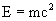
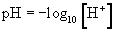
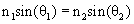

|
185 nm ~ Wavelength of UV-C light mainly responsible for total organic carbon oxidation and creation of free radicals. This wavelength is only obtainable from medium-pressure and high-pressure arc lamps 253.7 nm ~ Wavelength of UV-C light mainly responsible for DNA destruction and ozone decomposition. All types of mercury arc lamps produce this wavelength Absorption ~ The process where an agent absorbs the energy of a photon Angle of incidence ~ The initial angle between a beam of light incident on an interface between two different media and the normal of that interface Angle of reflection ~ The angle between a reflected beam of light and the normal to the interface of two different media. On a mirror, the angle of incidence is equal to the angle of reflection Angle of refraction ~ The angle between a beam of light entering a new medium and the normal of the surface Annulus ~ The volume formed between two cylinders with different diameters, creating a ring shaped channel Arc lamps ~ A class of lamps that produce light from an electric arc. The gas inside of the bulb determines the name and type of lamp Attenuate ~ To reduce or diminish with little or no distortion Baffle ~ A construction device that reduces the intensity of sound and reverberation. In fluid flow, baffles act as a barrier to facilitate turbulence and to lengthen the flow pathway, increasing residence time Beer-Lambert Law ~ Describes the relationship between absorption and material properties. Generally described by the equation: ; where A = absorbance, α = molar absorptivity of the absorbing species, l = path length traveled by light through the material, and c = concentration of the absorbing species Biocide ~ An agent known as responsible for killing living organisms, usually a chemical substance such as a pesticide Bunsen-Roscoe reciprocity law ~ Describes photochemical processes as exposure equal to intensity multiplied by time. In UV radiation, the reciprocity law describes total dose of radiant energy equal to the light intensity multiplied by exposure time c0 ~ The constant for speed of light in a vacuum. The value is exactly 299,792,458 m/s and it defines the SI unit of meter. In most cases, 3*108 is a good approximation. This is the same constant used in the well known equation . The speed of light through a transparent medium such as glass, water or air is slower Cell ~ A functional unit of a living organism, commonly referred to as “the building block of life”. Organisms like bacteria are unicellular while more complex living things are multicellular Chemical byproducts ~ The products of a chemical reaction, usually referred due to their toxicity or harmful effects. Some chemical byproducts are useful, such as chlorine as a residual Chemical cleaning ~ A broad range of cleaning methods using certain chemicals to remove rust, residue, corrosion, etc. Chemical cleaning can be an effective mechanism but can also create toxic byproducts, so usage should be determined on a site basis Coaxial ~ Centered along the same axis. Two coaxial cylinders share the same centerline, like concentric circles share the same center. cP ~ Centipoise. The SI unit for viscosity. 1 cP is equivalent to 10-2 poise and 10-3 kg/(m*s) or 10-3 Pa*s Dark repair ~ A phenomenon that occurs in some heterotrophic organisms where DNA is repaired in the absence of light after lethal doses of UV radiation is applied. Studies are currently being performed to determine the cause, mechanism, promoters, and inhibitors of dark repair Dead zone ~ A section in a reactor where flow stops and does not mix with the bulk flow Degree of transverse mixing ~ The amount of mixing that occurs from side-to-side, as opposed to longitudinal mixing Disinfection ~ The destruction of pathogens and microorganisms. Often the means for disinfection are chemical, but not so in the case of UV disinfection which relies on no chemicals Disinfection kinetics ~ The mathematical representation of the chemical reactions transpiring in disinfection. Refers to the rates at which disinfection occurs DNA ~ Deoxyribonucleic acid. The molecular building blocks for genes in all known living things Dose ~ The amount of electromagnetic radiation received by an agent Efficiency (η) ~ A dimensionless number that describes how efficient energy is utilized. In general, efficiency is defined as the energy output divided by energy input. Efficiency in a closed system cannot exceed 1 First order ~ Reaction rate where a chemical species is produced or consumed per unit time per volume in relation with its concentration to the first power Fluence ~ Similar to UV Dose. The term fluence is used to describe dose in a UV reactor Fouling ~ The unwanted buildup of particulates inside an ultraviolet reactor or on the quartz sleeve surface Frequency ~ The number of oscillations of a repeating motion per second. The SI unit is Hertz (Hz), which is equivalent to s-1 Hardness ~ Describes the high mineral content in water, as opposed to soft water with low mineral concentrations. Content includes metal ions and compounds of calcium (Ca) and magnesium (Mg) Hertz ~ The SI unit for frequency. Abbreviated as Hz, equivalent to unit s-1 Humic material ~ Also Natural Organic Matter (NOM). Substances that contain humus, such as humic acid. Can be found in coal, ocean water, etc Ideal UV dose ~ The amount of UV necessary to sufficiently inactivate a target organism Inactivation ~ An alternate term used to describe DNA destruction Inactivation ~ The sufficient cellular death of microorganisms to prevent reproduction Irradiance ~ The power of electromagnetic radiation incident on a surface per unit area. The SI unit is watt per square meter (W/m2). Note that irradiance is different from intensity kcal ~ Kilocalorie. A unit of energy equal to 4.187 kilojoules Laminar ~ Smooth streamline flow with no disruption. Described by low Reynolds numbers. Opposite of turbulent flow Light intensity ~ Refers to the brightness of a light source. See UV intensity Line source integration (LSI) ~ An extended model of MPSS where the limit is taken of an infinite number of point sources, expressed as an integral Longitudinal mixing ~ Mixing that occurs from back-to-front, along the flow path in a reactor, as opposed to transverse mixing Low-pressure ~ Typical mercury vapor pressure of about 0.1 Pa when mercury is ionized to produce light Medium-pressure ~ Arc lamps with mercury vapor pressures around 100 kPa. Operating temperatures can range from 600 to 800 ºC Mercury ~ Hg. Atomic number 80. Electromagnetic wavelengths in the UV-C range are the main emission from mercury Molar absorption coefficient ~ Also molar absorptivity (α). Describes the extent that a material absorbs energy such as electromagnetic waves Multiple Point Source Summation (MPSS) ~ A technique developed to approximate the fluence from a UV lamp with a finite length and diameter as a line of point sources. A three dimensional calculation of spherical radiation has also been developed using MPSS mW/cm2 ~ Milliwatt per centimeter squared. A common unit of irradiance Nitrogen atmosphere ~ Oxygen free atmosphere filled only with nitrogen gas nm ~ Nanometer. Equal to 10-9 meters Nuclear radiation ~ Radioactive decay where nuclei of unstable atoms splits to produce daughter atoms, releasing a high amount of energy. This radiation is not related to “UV radiation” which is just photon electromagnetic wavelengths Nucleic acids ~ A complex biochemical macromolecule that holds an organism’s genetic information. Most commonly, DNA and/or RNA is found in every living organism and virus Operation and maintenance (O&M) ~ The description of total costs and procedures of a site. Factors include initial costs, cleaning upkeep, safety hazards, replacement costs, etc Ozone ~ O3. A toxic inorganic gas that absorbs ultraviolet light. Ozone is also used as a residual in potable water distribution Pa ~ Pascal. The SI unit for pressure. Equal to N/m2 = kg/(m*s2) Pathogen ~ A disease-causing agent, usually a bacteria, virus, or fungus Perfect radial mixing ~ Also perfect axial mixing. Mixing around the axis so every point at any given radius will have the same concentration of contaminant. pH ~ The concentration of hydrogen ions ([H+]) ions in a solution, describing its acidity.  Physical mechanism ~ A reaction that requires physical contact and has spatial dependence, as opposed to a chemical mechanism Plug flow ~ A flow ideal for reactors with no back mixing, or longitudinal mixing. Velocity vectors of flow in a reactor look like a “plug” rather than a parabola Point source ~ A single point that radiates light energy as a sphere Polychromatic ~ A range of multiple electromagnetic wavelengths. Generally describes light that displays multiple visible colors at the same time Potable water ~ Consumable drinking water Pseudomonas aeruginosa ~ Considered one of the deadliest known pathogens. In humans, the bacteria cause microbial corrosion. Infections can be treated with antibiotics, but is naturally resistant to penicillin Quartz glass sleeve ~ A sleeve of glass that encases the UV lamp light bulb. Synthetically purified quartz is used for different effects on UV light filtration Radicals ~ An unstable chemical species with one unpaired electron. In text, radicals are generally denoted by an asterisk, such as *OH for hydroxide radical. Because of their unstable nature, radicals tend to be very reactive, lasting in solution for only very momentary periods of time Re ~ Reynolds number. The unitless quantity that describes flow turbulence Reflection ~ The change in direction and velocity of a wave back into the original medium at the interface of two different media, as opposed to refraction where the beam enters the second medium Refraction ~ The change in direction and velocity of a wave generally caused by passing through the interface from one medium into another Refraction index ~ Also Index of Refraction. The factor by which the velocity of light diminishes in one substance compared to the velocity of light in another, usually the speed of light in a vacuum (c0) Residence time ~ The amount of time a flowing volume spends inside a reactor Residual ~ Also residual disinfectant Residual disinfectant ~ An agent kept in purified drinking water to maintain purity for storage and transportation through the distribution system. Often the residuals are byproducts of chemical reactions done in purification processes. Some common residuals include chlorines, chloramines, and ozone RNA ~ Ribonucleic acid. Some organisms use RNA as the primary source of genetic information rather than DNA while most others use RNA to assist in messaging and transfer SI ~ International System of Units. A list of the current SI units can be found at http://physics.nist.gov/cuu/Units/units.html Snell’s Law ~ An equation that states that the refraction index of the first material (n1) multiplied by the sine of the angle of incidence (θ1) is equal to the refraction index of the second material (n2) multiplied by the sine of the angle of refraction (θ2).  Source radiant power ~ The total amount of electromagnetic power emitted from a source. The SI unit is watt (W) Teflon ~ Polytetrafluoroethylene (PTFE). A very non-reactive polymer with one of the lowest coefficients of friction known of any solid material. General uses include non-stick cookware coating and use on pipes Tortuous flow ~ Synonymous with turbulent flow Total Organic Carbon (TOC) ~ Carbon found in organic compounds, such as cells and DNA. TOC is usually measured by finding total carbon (TC) and subtracting the amount of inorganic carbon (IC) Transition region ~ A range of Reynolds numbers where flow can be either laminar or turbulent or both. The properties in this region depend on the type of fluid Traps ~ A section of flow in a reactor where fluid becomes stuck and does not flow through normally. For example, this can occur if the reaction chamber contains sharp turns or corners Turbidity ~ The muddiness or cloudiness of water caused by smaller suspended solid particles Turbulence ~ Chaotic flow in fluid dynamics that includes high amounts of convection. Described by large Reynolds numbers. Opposite of laminar flow Ultrasonic ~ High frequency acoustic energy sound waves that can be utilized to clean materials Ultraviolet radiation ~ Electromagnetic radiation of photons with wavelengths shorter than the visible color spectrum UPW ~ Ultra Pure Water UV intensity ~ Refers to the brightness of a UV source, regardless of what surface the light is striking. Note that intensity is different from irradiance UV-C ~ The band of ultraviolet light with wavelengths ranging from 100-280 nm. UV-C emissions are used fluorescent lamps and as a biocide in water disinfectionVisible color spectrum ~ The range of electromagnetic wavelengths from 400 nm (violet) to 700 nm (red) visible to humans W ~ Watt. The SI unit for power Wavelength ~ The distance between a single repeating wave pattern. Electromagnetic wavelengths vary from gamma rays around 10-16 meters to long radio waves up to 108 meters in size Working hours ~ The period of time a process is fully operational, such as the number of hours a UV light bulb is powered Zero order ~ Reaction rate where a chemical species is produced or consumed per unit time per volume in relation with it’s concentration to the zero power; the rate is constant regardless of the current concentration of the species |